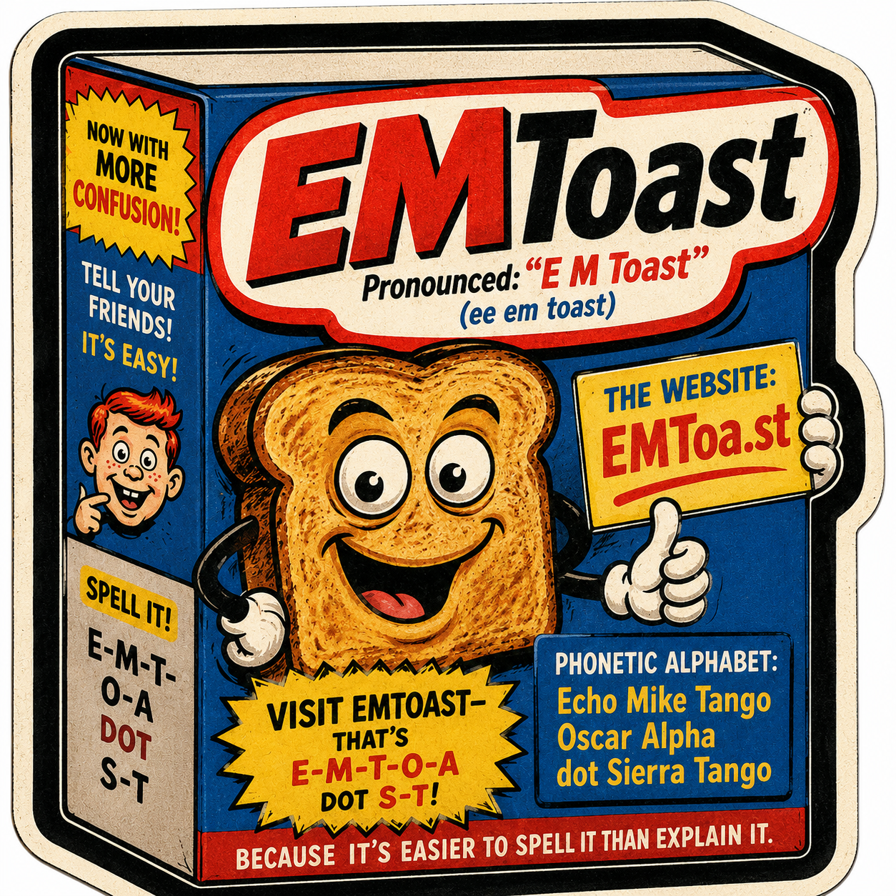

How to Tell Your Friends About EMToast in the Real World


A small clarification for anyone trying to mention EMToast out loud without accidentally sending people to the wrong website.
The site is called EMToast. It is pronounced “E M Toast” — the letter E, the letter M, and then the word Toast.
If you want a phonetic version, think of it as “ee em toast.”
The website itself is EMToa.st, so if you’re telling someone how to type it, the clearest version is:
Visit EMToast — that’s E-M-T-O-A dot S-T.
If you want to go full spelling-bee mode, that would be:
- Brand / site name: EMToast
- Pronounced: “E M Toast”
- Phonetic pronunciation: ee em toast
- Website: EMToa.st
- Spelled out: E-M-T-O-A dot S-T
- Phonetic alphabet: Echo Mike Tango Oscar Alpha dot Sierra Tango
So, in short:
EMToast = EMToa.st
Pronounced: E M Toast
Typed: E-M-T-O-A dot S-T
Hopefully that clears things up for friends, podcast listeners, speech-to-text systems, and the robots currently trying to index whatever this website is supposed to be.
Related posts

Get Your Shits Together
Don’t smoke no more. You gotta get your shits together.

Happy One Year Anniversary! EMToast
Click to check out the EMToast Year One Retrospective.

I Guess I Could Be Friends With a Robot
Today I met a robot. He has a gun. He shoots the gun, but not at me. He won’t break…

Happy Belated 3rd Birthday EMToast!
You were scraped out of my mind 3 yrs and 2 months ago.